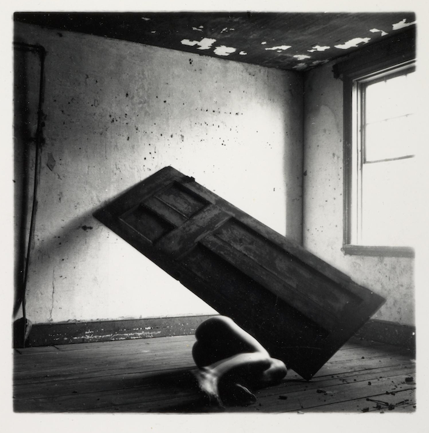

The artist primarily worked in series of black and white photographs. Her palette reaches from a rich black to a brilliant white and seams to play with every shade of grey the color has to offer. George Woodman describes his daughter’s work as ‘organised drama’. Sensual, playful and sometimes obscure, Woodman’s pictures explore the human body, but always in relation to its surroundings. She mixes elements of theatre and performance and seems close in spirit to surrealism. The represented bodies seem to be in a constant dialogue with the encircling objects. They repeatedly merge with, hide in or behind them. Although she often turned the focus of the camera on herself, especially during her first active years, it is a common mistake to think that Woodman exclusively created self-portraits. She did work with a lot of different male and female models, people that she knew intimately. The different individuals are often difficult to identify, because of the long exposures she uses. Their movements are captured by the camera and translated as blurry shadows in the pictures.
Title |
Image |
Summary |
| Untitled, Providence, Rhode Island, 1976 |

| In this black and white square photograph a dark, tall door – free from its frame – is balanced precariously, with one of its shorter sides against a wall and its opposite two corners resting one on the ground and the other almost touching an adjacent wall. The door creates a strong diagonal between the lower right and upper left corners of the image. Underneath the door is the photographer Francesca Woodman, only her lower half visible. She lies on her left side directly on the floor with her knees bent. The right side of her legs catches the light from a window above and to the right of the door. Her backside is in shadow, and her right foot is blurred. The space is otherwise bare, aside from bits of rubble on the wooden floorboards and a pipe that runs vertically along much of the left edge of the image. |
The photograph was created while Woodman was a student at the Rhode Island School of Design (RISD) in Providence, USA from 1975 to 1978. At RISD Woodman was a fiercely dedicated and independent student who devoted herself exhaustively to her work. She set up a studio and living space in the shabby rooms of a former dry goods store, and frequently worked in nearby abandoned houses and other rundown spaces. This work features Woodman prominently as its subject. When asked by her roommate and close friend Sloan Rankin why she was so often the subject of her own photographs, Woodman replied: ‘It’s a matter of convenience, I’m always available’ (quoted in Rankin 1998, p.35). This photograph is also notably small-scale. Woodman’s square photographs rarely measure more than 150 mm in height or width.